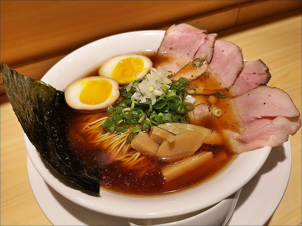
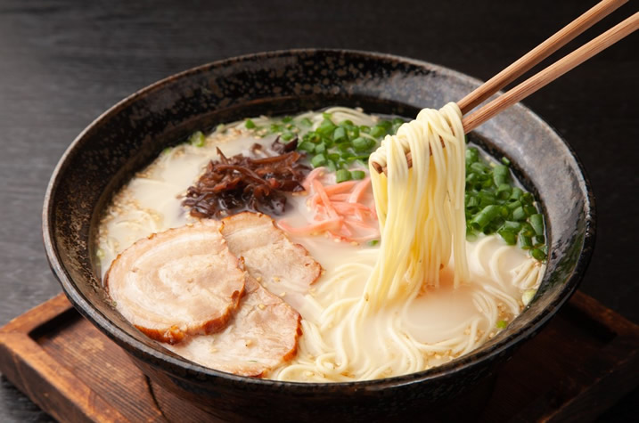
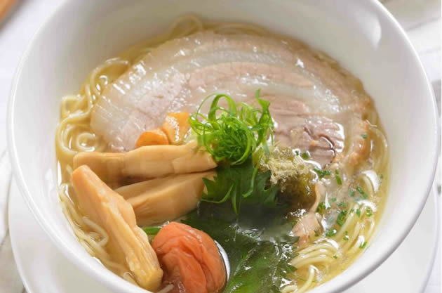
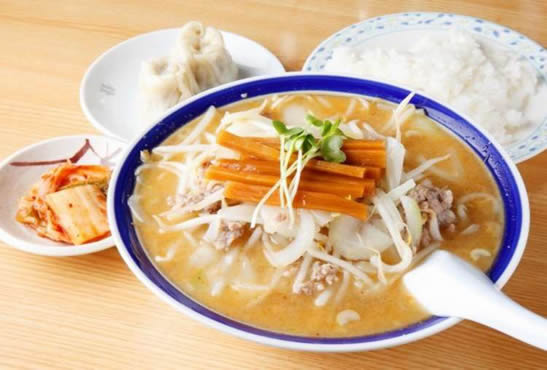

拉麵，在日本料理中出現的麵條食物種類之一。日本拉麵在日本其他常見名稱包括中華蕎麥麵等 。

醬 油 味
醬油拉麵是一種以醬油作為主調味料的拉麵口味。
在日本眾多拉麵之中，鹽味和醬油拉麵都是歷史最悠久的口味。
日常中如果只提到「拉麵」，通常就是指醬油口味的拉麵。

豚 骨 味
最早發源自九州，使用豬骨長期熬燉出白色的濃湯。
也可加醬油成為「豚骨醬油味」。

鹽 味
麵湯清澈，源於大正時期的北海道函館，因此又稱為「函館拉麵」。
和其他風味相比，更能突出湯底材料本身的味道。

味 噌 味
使用雞肉或豬肉熬製湯底，再以日本傳統的味噌醬調味。